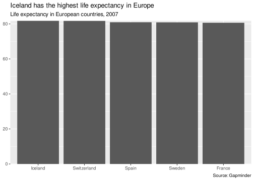
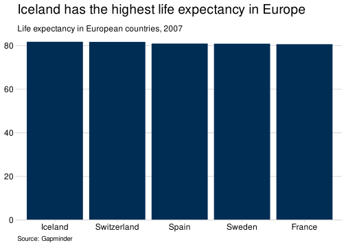

sgplot is an R package for creating accessible plots in the Scottish Government. Currently, functions are available for styling ggplot2 plots.
The package has been developed using the Government Analysis Function Data Visualisation guidance and uses accessible colour palettes from the Scottish Government Design System. sgplot should be used in conjunction with these guidance documents.
More information about the package and its functions can be found on the sgplot website. In particular, the cookbook contains lots of examples. Slides are also available for an internal presentation given to statisticians and analysts.
Installation
If you are working within the Scottish Government network, you can install sgplot in the same way as with other R packages. The easiest way to do this is by using the pkginstaller add-in. Further guidance is available on eRDM.
Alternatively, sgplot can be installed directly from GitHub. Note that this method requires the remotes package and may not work from within the Scottish Government network.
remotes::install_github(
"ScotGovAnalysis/sgplot",
upgrade = "never",
build_vignettes = TRUE
)Finally, sgplot can also be installed by downloading the zip of the repository and running the following code, replacing the section marked <> (including the arrows themselves) with the location of the downloaded zip:
remotes::install_local(
"<FILEPATH OF ZIPPED FILE>/sgplot-main.zip",
upgrade = "never",
build_vignettes = TRUE
)Getting Started
Once installed, sgplot can be loaded using the library() function:
Help files for each function in the package can be found on the References page of the package website. Alternatively, type ?function_name into the RStudio console. For example:
?theme_sg()Use sgplot as default
The easiest way to use sgplot is by adding use_sgplot() to the beginning of your R script, Rmarkdown document or Shiny app code. This function will set a number of defaults to ggplot2 geoms, use sgplot colour palettes and use theme_sg().
Example 1: Plot with one colour using ggplot2 defaults
library(ggplot2)
library(dplyr)
library(gapminder)
gapminder |>
filter(year == 2007 & continent == "Europe") |>
slice_max(order_by = lifeExp, n = 5) |>
ggplot() +
geom_col(aes(x = reorder(country, -lifeExp), y = lifeExp)) +
scale_y_continuous(expand = c(0, 0)) +
labs(
x = NULL,
y = NULL,
title = "Iceland has the highest life expectancy in Europe",
subtitle = "Life expectancy in European countries, 2007",
caption = "Source: Gapminder"
)
Example 2: Plot with one colour using sgplot defaults
sgplot::use_sgplot()
gapminder |>
filter(year == 2007 & continent == "Europe") |>
slice_max(order_by = lifeExp, n = 5) |>
ggplot() +
geom_col(aes(x = reorder(country, -lifeExp), y = lifeExp)) +
scale_y_continuous(expand = c(0, 0)) +
labs(
x = NULL,
y = NULL,
title = "Iceland has the highest life expectancy in Europe",
subtitle = "Life expectancy in European countries, 2007",
caption = "Source: Gapminder"
)
Note on use of titles, subtitles and captions
Titles, subtitles and captions have been embedded in these example charts for demonstration purposes. However, for accessibility reasons, it is usually preferable to provide titles in the body of the page rather than embedded within the image of the plot. More information is available in the accessibility article.
Licence
Unless stated otherwise, the codebase is released under the MIT License. This covers both the codebase and any sample code in the documentation.
The documentation is © Crown copyright and available under the terms of the Open Government 3.0 licence.